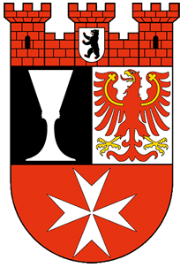
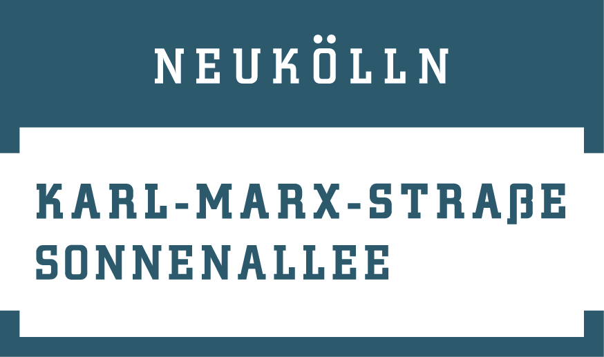

<!DOCTYPE html>
<html>
  <head>
      <title>'KMS-Sonne interaktive Webkarte'</title>
      <!-- 1. verweis auf extern Leaflet CSS -->
      <link rel="stylesheet" href="https://unpkg.com/leaflet@1.0.3/dist/leaflet.css" />
      <link rel="stylesheet" type="text/css" href="css/style.css">
    <meta http-equiv="Conent-Type" content="text/html"; charset="utf-8"/>
  </head>
  <body>
  <div id="map"></div>
    <!-- 2. Leaflet Javascript library hinzufügen-->
    <script src="https://unpkg.com/leaflet@1.0.3/dist/leaflet.js"></script>
    <!-- 2.1. Leaflet.TextPath library hinzufügen für personalisierte Labels-->
    <script src="Leaflet.TextPath-master/leaflet.textpath.js"></script>
    <!-- 3. JQuery hinzufügen-->
    <script src="https://ajax.googleapis.com/ajax/libs/jquery/3.2.1/jquery.min.js"></script>
    <script>

    var map = L.map('map',{ center: [52.48000, 13.4400], zoom: 15});
    // Tile Layer basemap aus mapbox.com hinzufügen
    L.tileLayer('https://api.mapbox.com/styles/v1/bsg/cjp2dp2vt20ur2rpiku6hv3j9/tiles/256/{z}/{x}/{y}@2x?access_token=pk.eyJ1IjoiYnNnIiwiYSI6ImNqcDJjdmtqcTA1eDIzcW5yMHczNmpsY3IifQ.m7XX4DPMmYbtkYPRhPhWBw', {maxZoom: 20}).addTo(map);

    // personalisierte Ikone für Mark-ups Rathaus und Richardstr 5
    var nkIcon = L.icon({
      iconUrl: 'png/redstar.png',
      shadowUrl: 'png/shadow.png',
      iconSize: [35,35],
      shadowSize: [30,20],
      shadowAnchor: [15,6]
    });

    var aktionIcon = L.icon({
      iconUrl: 'png/bluestar.png',
      shadowUrl: 'png/shadow.png',
      iconSize: [100,50],
      shadowSize: [30,20],
      shadowAnchor: [25,2]
    });

    //Mark-ups Rathaus und Richardstr 5 mit entsprechende Pop-ups
    var rathaus = L.marker ([52.48152, 13.4360], {icon: nkIcon}).addTo(map).bindPopup("<b>Bezirksamt Neukölln</b><br>Fachbereich Stadtplanung<br> Karl-Marx-Str. 83 <br> Di und Do 9:00–12:00 Uhr <br>  <br> <a href=https://www.aktion-kms.de/>Aktuelles</a>");

    var richard5 = L.marker ([52.47832, 13.4386], {icon: aktionIcon}).addTo(map).bindPopup("<b>Vor-Ort-Büro</b><br> [Aktion!Karl-Marx-Straße] <br> Beteiligungsgremium Sonnenallee <br> Richardstraße 5, 12043 Berlin <br>  <br> <a href=http://www.kms-sonne.de/beteiligung/>Beteiligung</a>");
    

    //1. leere layers herstellen
    var strassenLayer = L.layerGroup().addTo(map);
    var gruenLayer = L.layerGroup().addTo(map);
    var sozialLayer = L.layerGroup().addTo(map);
    var blockLayer = L.layerGroup().addTo(map);
    var azLayer = L.layerGroup().addTo(map);
    var sgLayer = L.layerGroup().addTo(map);

    var strassenStyle = {
      "weight" : 3,
      "fillColor" : '#feed28',
      "fillOpacity" : 0.6,
      "color" : '#ffffff'
    }

    var strassenNameStyle = {
      "weight" : 3,
      "opacity" : 0,
    }

    var grueneStyle = {
      "color" : '#215228',
      "stroke" : false,
      "fillOpacity" : 0.8
    }

    var sozialeStyle = {
      "weight" : 0.2,
      "fillColor" : '#990099',
      "fillOpacity" : 0.5,
      "color" : '#ffffff'
    }

    var blockStyleAbgeschlossen = {
      "dashArray" : '4',
      "color" : '#800000',
      "fillOpacity" : 0,
      "lineCap" : 'square'
    }

    var blockStyleInUmsetzung = {
      "color" : '#800000',
      "fillOpacity" : 0,
      "lineCap" : 'square'
    }

    var azStyle = {
      "weight" : 3,
      "stroke" : true,
      "color" : '#FF0000',
      "fill" : null
    }

    var sgStyle = {
      "weight" : 3,
      "dashArray" : '6',
      "color" : '#000000',
      "fill" : null,
      "lineCap" : 'square'
    }


    $.getJSON("data/strasse_name.geojson",function(json){
    // GeoJSON layer in die Karte hinzufügen
        L.geoJson(json, {
          style: strassenNameStyle,
          onEachFeature: addStrasseName,
        }).addTo(map);
    });

    $.getJSON("data/strassen.geojson",function(json){
    // GeoJSON layer in die Karte hinzufügen
        L.geoJson(json, {
          style: strassenStyle,
          onEachFeature: addStrasse,
        }).addTo(map);
    });

    $.getJSON("data/gruene.geojson",function(json){
    // GeoJSON layer in die Karte hinzufügen
        L.geoJson(json, {
          style: grueneStyle,
          onEachFeature: addGruen,
        }).addTo(map);
    });

    $.getJSON("data/soziale.geojson",function(json){
    // GeoJSON layer in die Karte hinzufügen
        L.geoJson(json, {
          style: sozialeStyle,
          onEachFeature: addSozial,
        }).addTo(map);
    });

    $.getJSON("data/blocks.geojson",function(json){
    // GeoJSON layer in die Karte hinzufügen
        L.geoJson(json, {
          style: function(feature) {
            switch (feature.properties.stand) {
              case 'in Umsetzung' : return blockStyleInUmsetzung;
              case 'noch nicht begonnen' : return blockStyleInUmsetzung;
              case 'abgeschlossen': return blockStyleAbgeschlossen;
            }
          },
          onEachFeature: addBlock,
        }).addTo(map);
    });

    $.getJSON("data/grenze_az.geojson",function(json){
    // GeoJSON layer in die Karte hinzufügen
        L.geoJson(json, {
          style: azStyle,
          onEachFeature: addAZ,
        }).addTo(map);
    });

    $.getJSON("data/grenze_sg.geojson",function(json){
    // GeoJSON layer in die Karte hinzufügen
        L.geoJson(json, {
          style: sgStyle,
          onEachFeature: addSG,
        }).addTo(map);
    });

    function addStrasse (feature, layer) {
      strassenLayer.addLayer(layer);
      layer.bringToBack(layer);
      layer.bindPopup(feature.properties.proyect+'<p> <a href="'+feature.properties.www_link_alt+'">Weitere Infos...</a></p>');
    };

    function addStrasseName (feature, layer) {
      strassenLayer.addLayer(layer);
      layer.bringToFront(layer);
      layer.setText(feature.properties.name, { 
        center: true, 
        attributes: { 
          'font-size':'11',
           textLength: 90}});
    };

    function addGruen (feature, layer) {
      gruenLayer.addLayer(layer);
      layer.bringToFront(layer);
      layer.bindPopup(feature.properties.proyect+'<p> <a href="'+feature.properties.www_link_alt+'">Weitere Infos...</a></p>');
    };

    function addSozial (feature, layer) {
      sozialLayer.addLayer(layer);
      layer.bringToBack(layer);
      layer.bindPopup(feature.properties.proyect+'<p> <a href="'+feature.properties.www_link_alt+'">Weitere Infos...</a></p>');
    };

    function addBlock (feature, layer) {
      blockLayer.addLayer(layer);
      layer.bindPopup(feature.properties.group+' '+feature.properties.proyect+'<p> <a href="'+feature.properties.www_link_alt+'">Weitere Infos...</a></p>');
      layer.bindTooltip(feature.properties.proyect, {className: 'blockCSSClass',permanent: true, direction: 'center'});
    };

    function addAZ (feature, layer) {
      azLayer.addLayer(layer);
      layer.bringToFront(layer);
      layer.bindPopup(+feature.properties.proyect+'<p> <a href="'+feature.properties.www_link_alt+'">Weitere Infos...</a></p>');
    };

    function addSG (feature, layer) {
      sgLayer.addLayer(layer);
      layer.bringToFront(layer);
      layer.bindPopup(feature.properties.proyect+'<p> <a href="'+feature.properties.www_link_alt+'">Weitere Infos...</a></p>');
    };

    var layerControl = {
        "Straßen und Plätze": strassenLayer, 
        "Grünanlagen und Spielplätze": gruenLayer,
        "Soziale und kulturelle Infrastruktur": sozialLayer,
        "Blockkonzepte": blockLayer
    };

    L.control.layers(null, layerControl,{collapsed: false}).addTo(map);

    </script>
  </body>
</html>